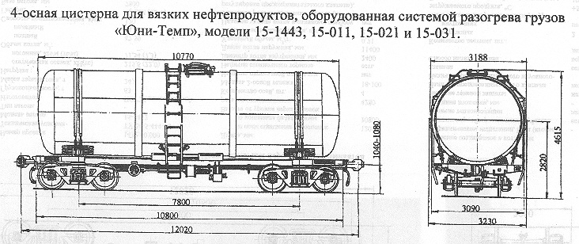

Назначение: для перевозки вязких нефтепродуктов
Параметры
| Номер проекта | |
| Технические условия | |
| Модель вагона | |
| Тип вагона | |
| Изготовитель | |
| Грузоподъемность, т | 58 |
| Масса тары вагона, т | 29,0±3% |
| Нагрузка: статическая осевая, кН(тс) |
213,15(21,75) |
| погонная, кН/м(тс/м) | 69,9(7,13) |
| Объем котла, м3: полный |
70,1 |
| полезный | 68,7 |
| Скорость конструкционная, км/ч | 120 |
| Удельный объем котла, м3/т | 1,19 |
| Диаметр котла внутренний, мм | 3000 |
| Ширина максимальная, мм | 3230 |
| Длина котла наружная,мм | 10770 |
| Высота от уровня верха головок рельсов,мм: максимальная |
4615 |
| до оси автосцепок | 1040-1080 |
Примечание: остальные характеристики соответствуют аналогичным моделям цистерн без системы разогрева груза "Юни-Темп"